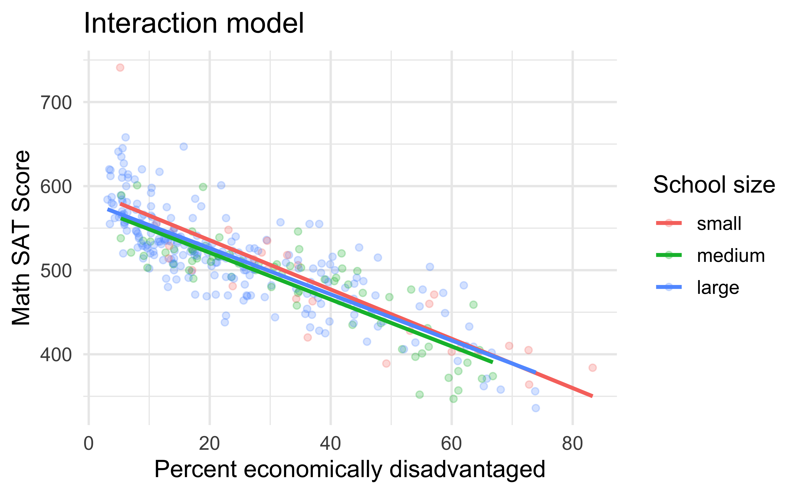
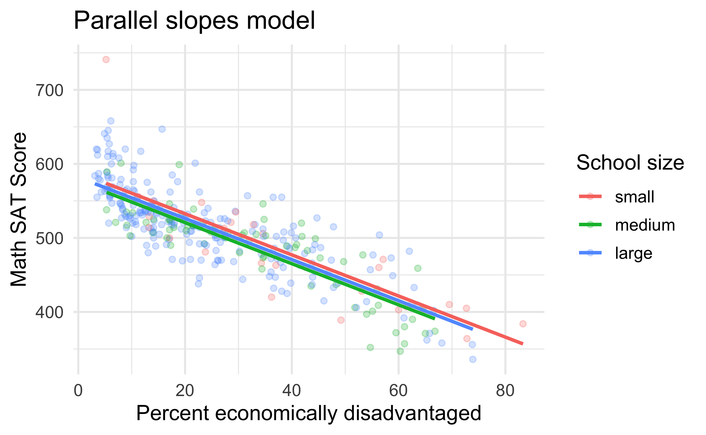
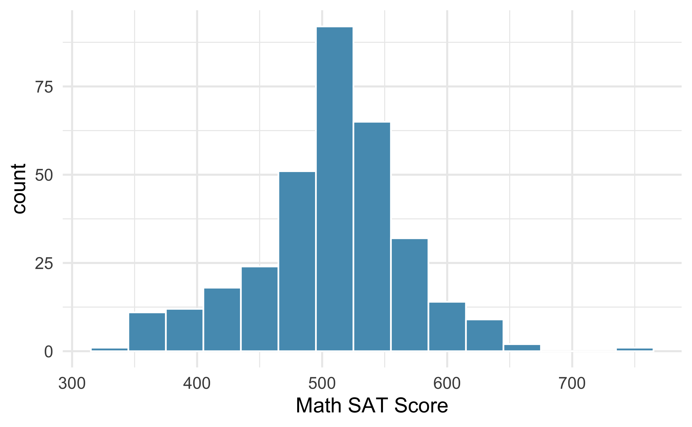

sat_interaction <- lm(average_sat_math ~ perc_disadvan * size,
data = MA_schools)
get_regression_table(sat_interaction)Model Selection
0.1 Reading Guide – Due Monday by the start of class
1 Textbook Reading
This week’s course content is a compilation of different sections from a variety of textbooks. Your reading is housed here!
1.1 Model Selection
The best model is not always the most complicated. Sometimes including variables that are not evidently important can actually reduce the accuracy of predictions. This week, we will learn about model selection strategies – strategies which can help us eliminate variables from the model that are found to be less important. It’s common (and hip, at least in the statistical world) to refer to models that have undergone such variable pruning as parsimonious.
In practice, the model that includes all available predictors is often referred to as the full model. The full model may not be the best model, and if it isn’t, we want to identify a smaller model that is preferable.
In Section 6.3.1 of ModernDive, you used visualizations to compare an interaction model (different slopes) with a parallel slopes model. In the figures below, both the parallel slope and the interaction model attempt to explain \(y =\) the average math SAT score for various high schools in Massachusetts.
When comparing the left and right-hand plots below, we observed that the three lines corresponding to small, medium, and large high schools were not that different. Given this similarity, we stated it could be argued that the “simpler” parallel slopes model should be favored.
# Interaction model
ggplot(MA_schools,
aes(x = perc_disadvan, y = average_sat_math, color = size)) +
geom_point(alpha = 0.25) +
geom_smooth(method = "lm", se = FALSE) +
labs(x = "Percent economically disadvantaged", y = "Math SAT Score",
color = "School size", title = "Interaction model")
# Parallel slopes model
ggplot(MA_schools,
aes(x = perc_disadvan, y = average_sat_math, color = size)) +
geom_point(alpha = 0.25) +
geom_parallel_slopes(se = FALSE) +
labs(x = "Percent economically disadvantaged", y = "Math SAT Score",
color = "School size", title = "Parallel slopes model")

In Table 1 and Table 2, we observed that the interaction model was “more complex” in that the regression table had six (6) rows versus the four (4) rows of the parallel slopes model.
| term | estimate | std_error | statistic | p_value | lower_ci | upper_ci |
|---|---|---|---|---|---|---|
| intercept | 594.327 | 13.288 | 44.726 | 0.000 | 568.186 | 620.469 |
| perc_disadvan | -2.932 | 0.294 | -9.961 | 0.000 | -3.511 | -2.353 |
| size: medium | -17.764 | 15.827 | -1.122 | 0.263 | -48.899 | 13.371 |
| size: large | -13.293 | 13.813 | -0.962 | 0.337 | -40.466 | 13.880 |
| perc_disadvan:sizemedium | 0.146 | 0.371 | 0.393 | 0.694 | -0.585 | 0.877 |
| perc_disadvan:sizelarge | 0.189 | 0.323 | 0.586 | 0.559 | -0.446 | 0.824 |
sat_parallel_slopes <- lm(average_sat_math ~ perc_disadvan + size,
data = MA_schools)
get_regression_table(sat_parallel_slopes)| term | estimate | std_error | statistic | p_value | lower_ci | upper_ci |
|---|---|---|---|---|---|---|
| intercept | 588.19 | 7.607 | 77.325 | 0.000 | 573.23 | 603.15 |
| perc_disadvan | -2.78 | 0.106 | -26.120 | 0.000 | -2.99 | -2.57 |
| size: medium | -11.91 | 7.535 | -1.581 | 0.115 | -26.74 | 2.91 |
| size: large | -6.36 | 6.923 | -0.919 | 0.359 | -19.98 | 7.26 |
In this reading, we’ll mimic the model selection we just performed using the qualitative “eyeball test,” but this time using a numerical and quantitative approach. Specifically, we’ll use the \(R^2\) summary statistic (pronounced “R-squared”), also called the “coefficient of determination.” But first, we must introduce one new concept: the variance of a numerical variable.
1.2 R-squared (\(R^2\))
We’ve previously studied two summary statistics of the spread (or variation) of a numerical variable: the standard deviation and the interquartile range (IQR). We now introduce a third summary statistic of spread: the variance. The variance is merely the standard deviation squared and it can be computed in R using the var() summary function within summarize()1.
Let’s investigate the variability of the SAT math scores, using the MA_schools dataset. In the first plot, we visualize the overall spread / variability in these scores, using a histogram. In the second plot, we investigate the relationship between SAT math scores and the percent of students who are economically disadvantaged.
ggplot(MA_schools,
aes(x = average_sat_math)) +
geom_histogram(binwidth = 30) +
labs(x = "Math SAT Score")
ggplot(MA_schools,
aes(x = perc_disadvan, y = average_sat_math)) +
geom_point(alpha = 0.25) +
geom_smooth(method = "lm", se = FALSE) +
labs(x = "Percent economically disadvantaged", y = "Math SAT Score")

As evidenced by the plot, there appears to be a moderately strong relationship between SAT math scores and the percent of students who are economically disadvantaged. Next, let’s fit the linear regression for modeling the relationship between SAT math scores and the percent of students who are economically disadvantaged.
Recall, we can use the get_regression_points() function2 to our saved linear model (fit with the lm() function) to get:
- the observed values (\(y\))
- the fitted values (\(\hat{y}\))
- the residuals (\(y - \hat{y}\))
get_regression_points(sat_simple)
#> # A tibble: 332 × 5
#> ID average_sat_math perc_disadvan average_sat_math_hat residual
#> <int> <dbl> <dbl> <dbl> <dbl>
#> 1 1 516 21.5 522. -5.52
#> 2 2 514 22.7 518. -4.18
#> 3 3 534 14.6 541. -6.70
#> 4 4 581 6.3 564. 17.2
#> 5 5 592 10.3 553. 39.4
#> 6 6 576 10.3 553. 23.4
#> # ℹ 326 more rowsLet’s now use the var() summary function within a summarize() to compute the variance of these three terms:
get_regression_points(sat_simple) %>%
summarize(var_y = var(average_sat_math),
var_y_hat = var(average_sat_math_hat),
var_residual = var(residual))
#> # A tibble: 1 × 3
#> var_y var_y_hat var_residual
#> <dbl> <dbl> <dbl>
#> 1 3691. 2570. 1121.Observe that the variance of \(y\) is equal to the variance of \(\hat{y}\) plus the variance of the residuals. But what do these three terms tell us individually?
First, the variance of \(y\) (denoted as \(\text{var}(y)\)) tells us how much do Massachusetts high schools differ in average math SAT scores. The goal of regression modeling is to fit a model that hopefully explains this variation. In other words, we want to understand what factors explain why certain schools have high math SAT scores, while others have low scores. This is independent of the model; this is just data. In other words, whether we fit an interaction or parallel slopes model, \(\text{var}(y)\) remains the same.
Second, the variance of \(\hat{y}\) (denoted as \(\text{var}(\hat{y})\)) tells us how much the fitted values from our interaction model vary. That is to say, after accounting for (1) the percentage of the study body that is socioeconomically disadvantaged and (2) school size in an interaction model, how much do our model’s explanations of average math SAT scores vary?
Third, the variance of the residuals tells us how much do “the left-overs” from the model vary. Observe how the points in the interaction plot above (on the left) scatter around the three lines. Say instead all the points fell exactly on one of the three lines. Then all residuals would be zero and hence the variance of the residuals would be zero.
We’re now ready to introduce \(R^2\)!
\[R^2 = 1 - \frac{\text{var}(\text{residuals})}{\text{var}(y)}\]
\(R^2\) is the proportion of the spread / variation of the outcome variable \(y\) that is explained by our model, where our model’s explanatory power is embedded in the fitted values \(\hat{y}\). Furthermore, since it can be mathematically proven that \(0 \leq \text{var}(y) \leq \text{var}(\hat{y})\) (a fact we leave for an advanced class on regression), we are guaranteed that:
\[0 \leq R^2 \leq 1\]
Thus, \(R^2\) can be interpreted as follows:
\(R^2\) values of 0 tell us that our model explains 0% of the variation in \(y\). Say we fit a model to the Massachusetts high school data and obtained \(R^2 = 0\). This would be telling us that the combination of explanatory variables (\(x\)) we used and model form we chose (interaction or parallel slopes) explains 0% of the variation in the SAT math scores. Or, in other words, the combination of explanatory variables (\(x\)) we used and model form we chose tell us nothing about average math SAT scores. The model is a poor fit.
\(R^2\) values of 1 tell us that our model explains 100% of the variation in \(y\). Say we fit a model to the Massachusetts high school data and obtained \(R^2 = 1\). This would be telling us that the combination of explanatory variables (\(x\)) we used and model form we chose (interaction or parallel slopes) explains 0% of the variation in the SAT math scores. Or, in other words, the combination of explanatory variables (\(x\)) we used and model form we chose tell us everything we need to know about average math SAT scores.
In practice however, \(R^2\) values of 1 almost never occur. Think about it in the context of Massachusetts high schools. There are an infinite number of factors that influence why certain high schools perform well on SAT’s on average while others don’t perform well. The idea that a human-designed statistical model can capture all the heterogeneity of all high school students in Massachusetts is bordering on hubris. However, even if such models are not perfect, they may still prove useful in determining educational policy. A general principle of modeling we should keep in mind is a famous quote by eminent statistician George Box: “All models are wrong, but some are useful.”
Model selection using R-squared
When we learned about simple / basic regression, we discussed how, given a set of basic regressions, you could choose the “best” basic regression as the one where the explanatory variable has the strongest relationship with the response. We discussed this in terms of correlation, but for simple linear regression, \(R^2\) is the square of the correlation.
The ncbirths dataset contains a variety of variables on the habits and practices of expectant mothers and the birth of their children. Suppose, we were interested in choosing a simple linear regression with the variable that has the strongest relationship with weight (the birth weight of the baby). For explanatory variables, we have:
weeks– length of pregnancymage– mother’s agevisits– number of hospital visits during pregnancygained– weight gained during pregnancy
Let’s explore each of these basic regression models!
| cor | var_y | var_y_hat | var_residual | r_sq | |
|---|---|---|---|---|---|
| Weeks | 0.670 | 2.27 | 1.019 | 1.25 | 0.449 |
| Gained | 0.154 | 2.22 | 0.053 | 2.17 | 0.024 |
| Visits | 0.135 | 2.21 | 0.040 | 2.17 | 0.018 |
| Mother's Age | 0.055 | 2.28 | 0.007 | 2.27 | 0.003 |
From Table 3, we can see that weeks has by far the strongest relationship with the birth weight of the baby, with a correlation of 0.670. Notice how we could get the \(R^2\) for this regression model (weight ~ weeks) two ways:
- We could square the correlation: \(0.670^2 =\) 0.449
- We could find \(1 - \frac{\text{var}(\text{residuals})}{\text{var}(y)} =\) 0.449
Both methods produce an \(R^2\) of 0.449. This value tells us that the simple linear regression with weeks as the explanatory variable is able to explain 44.9% of the variability in the birth weight of a baby.
Adding more variables
You might say, well why not add more than one variable into the model. That makes sense, given what we’ve learned about multiple linear regression. However, when we have a regression with more than one explanatory variable, \(R^2\) is no longer a good summary measure of how much variability in the response we’ve explained with our model. The problem lies in the formula for \(R^2\)!
This strategy for estimating \(R^2\) is acceptable when there is just a single explanatory variable. However, it becomes less helpful when there are many variables. The regular \(R^2\) is a biased estimate of the amount of variability explained by the model when applied to model with more than one predictor. This is because any variable when added to the model will decrease the residuals, even just by a little bit.
Decreasing the residuals leads to:
a smaller value of \(\text{var}(\text{residuals})\)
a smaller fraction of \(\frac{\text{var}(\text{residuals})}{\text{var}(y)}\)
a larger number of \(1 - \frac{\text{var}(\text{residuals})}{\text{var}(y)}\)
Thus, adding any variable will always result in a larger value of \(R^2\).
For example, I’ve added a new column to the ncbirths dataset, one that is entirely simulated noise and has no relationship with the birth weight of the baby. Here is a plot of my variable, just to confirm!

Alright, now I’m including this noise variable as an explanatory variable in the multiple linear regression, where weeks is also an explanatory variable.
noise_lm <- lm(weight ~ weeks + noise, data = ncbirths_noise)
get_regression_points(noise_lm) |>
summarize(var_y = var(weight),
var_y_hat = var(weight_hat),
var_residual = var(residual),
r_sq = 1 - (var_residual / var_y)
)
#> # A tibble: 1 × 4
#> var_y var_y_hat var_residual r_sq
#> <dbl> <dbl> <dbl> <dbl>
#> 1 2.27 1.02 1.25 0.450From the table above, we can see that the \(R^2\) value has increased. Not by much, but still! We went from an \(R^2\) of 0.449 when weeks was the only explanatory variable, to an \(R^2\) of 0.45 when noise was added as an explanatory variable. This may seem like a small change, but it may not necessarily always be small! Thus, this behavior was concerning to Statisticians, and they invented an alternative.
1.3 Adjusted \(R^2\)
To get a better estimate, we use the adjusted \(R^2\)!
Adjusted R-squared as a tool for model assessment.
The adjusted R-squared is computed as:
\[R^2_{adj} = 1 - \frac{\text{var(residuals)} / (n - k - 1)}{\text{var}(y) / (n - 1)}\] \[R^2_{adj} = 1 - \frac{\text{var(residuals)}}{\text{var}(y)} \times \frac{(n - 1)}{(n - k - 1)}\] where \(n\) is the number of observations used to fit the model and \(k\) is the number of predictor variables in the model. Remember that a categorical predictor with \(p\) levels will contribute \(p - 1\) to the number of variables in the model because we need \(p - 1\) offsets!
Because \(k\) is never negative, the adjusted \(R^2\) will be smaller – often times just a little smaller – than the unadjusted \(R^2\). The reasoning behind the adjusted \(R^2\) lies in the degrees of freedom associated with each variance, which is equal to \(n - k - 1\) in the multiple regression context. If we were to make predictions for new data using our current model, we would find that the unadjusted \(R^2\) would tend to be slightly overly optimistic, while the adjusted \(R^2\) formula helps correct this bias.
Caution
Adjusted \(R^2\) could also have been used instead of unadjusted \(R^2\) for basic regressions. However, when there is only \(k = 1\) explanatory variables, adjusted \(R^2\) is very close to regular \(R^2\), so this nuance isn’t typically important when the model has only one predictor.
Coming back to the multiple linear regression where I included a second noise variable, we can compare the unadjusted \(R^2\) to the adjusted \(R^2\). Rather than calculating all of these summary statistics “by hand”, we can use the get_regression_summaries() function to obtain interesting summary statistics about the model:
get_regression_summaries(noise_lm)| r_squared | adj_r_squared | mse | rmse |
|---|---|---|---|
| 0.45 | 0.449 | 1.25 | 1.12 |
Notice, Table 4 shows that adjusted \(R^2\) is lower than unadjusted \(R^2\). This is exactly what we want! We want our \(R^2\) to increase only if the extra variable we added was “worth it.” Here, the adjusted \(R^2\) suggests that adding a second explanatory variable (noise) is not worth the additional model complexity.
Model selection using adjusted \(R^2\)
Alright, let’s apply the concept of adjusted \(R^2\) to a multiple linear regression we are actually interested in. At the beginning of this reading, you were asked to recall the “eyeball” selection method we used to determine that the interaction model and parallel slopes model were unnecessarily more complicated than the simple linear regression model.
In Table 5 below, I’ve calculated the adjusted \(R^2\) for both the interaction model and parallel slopes model, and compared them to the simple linear regression model:
| r_squared | adj_r_squared | mse | rmse | |
|---|---|---|---|---|
| Interaction Model | 0.699 | 0.694 | 1107 | 33.3 |
| Parallel Slopes Model | 0.699 | 0.696 | 1109 | 33.3 |
| Simple Linear Regression Model | 0.696 | 0.695 | 1118 | 33.4 |
Observe how the adjusted \(R^2\) values for the interaction model and parallel slopes model are nearly identical to the unadjusted \(R^2\) value from the simple linear regression model. These summaries suggest, there is no justification for added model complexity. The simple linear regression model with percent of students economically disadvantaged is able to explain the same amount of variance in the SAT math scores as the more complex models which include the size of the school.
Extending to evals data
Now let’s repeat this \(R^2\) comparison between interaction and parallel slopes model for our models of \(y\) = teaching score for UT Austin professors. In the ModernDive textbook, you visually compared using parallel slopes or different slopes to model the relationship between age and teaching score for male and female professors.
| r_squared | adj_r_squared | mse | rmse | |
|---|---|---|---|---|
| Interaction Model | 0.051 | 0.045 | 0.280 | 0.529 |
| Parallel Slopes Model | 0.039 | 0.035 | 0.284 | 0.533 |
Observe how the adjusted \(R^2\) values in Table 6 are now very different! The adjusted \(R^2\) for the interaction model is 0.045 (or 4.5%) and the adjusted \(R^2\) for the parallel slopes model is 0.035 (or 3.5%). This may seem like a small change (of 1%), but if we calculate the percent change (\(\frac{0.045 - 0.035}{0.035}\)), we see that by allowing the slopes to be different, we improved our adjusted \(R^2\) by almost 30%! Thus, it could be argued that the additional complexity is warranted.
1.4 Step-wise Selection
Another method for model selection is called “stepwise selection.” This method considers every possible explanatory variable in the dataset and decides if each variable should be included in the model, using a stepwise approach.
Data Context
For our investigation of this method, we will consider data about loans from the peer-to-peer lender, Lending Club. The loan data includes terms of the loan as well as information about the borrower. The outcome variable we would like to better understand is the interest rate assigned to the loan. For instance, all other characteristics held constant, does it matter how much debt someone already has? Does it matter if their income has been verified? Multiple regression will help us answer these and other questions.
The dataset includes results from 10,000 loans, and we’ll be looking at a subset of the available variables. The first six observations in the dataset are shown in Table 7 below, and descriptions for each variable are provided in Table 8. Notice that the past bankruptcy variable (bankruptcy) is an indicator variable, where it takes the value 1 if the borrower had a past bankruptcy in their record and 0 if not. Using an indicator variable in place of a category name allows for these variables to be directly used in regression. Two of the other variables are categorical (verified_income and issue_month), each of which can take one of a few different non-numerical values.
The loans_full_schema data can be found in the openintro R package. Based on the data in this dataset we have created two new variables: credit_util which is calculated as the total credit utilized divided by the total credit limit and bankruptcy which turns the number of bankruptcies to an indicator variable (0 for no bankruptcies and 1 for at least 1 bankruptcy). We will refer to this modified dataset as loans.
loans dataset.
| interest_rate | verified_income | debt_to_income | credit_util | bankruptcy | term | credit_checks | issue_month |
|---|---|---|---|---|---|---|---|
| 14.07 | Verified | 18.01 | 0.548 | 0 | 60 | 6 | Mar-2018 |
| 12.61 | Not Verified | 5.04 | 0.150 | 1 | 36 | 1 | Feb-2018 |
| 17.09 | Source Verified | 21.15 | 0.661 | 0 | 36 | 4 | Feb-2018 |
| 6.72 | Not Verified | 10.16 | 0.197 | 0 | 36 | 0 | Jan-2018 |
| 14.07 | Verified | 57.96 | 0.755 | 0 | 36 | 7 | Mar-2018 |
| 6.72 | Not Verified | 6.46 | 0.093 | 0 | 36 | 6 | Jan-2018 |
loans dataset.
| Variable | Description |
|---|---|
| interest_rate | Interest rate on the loan, in an annual percentage. |
| verified_income | Categorical variable describing whether the borrower's income source and amount have been verified, with levels `Verified`, `Source Verified`, and `Not Verified`. |
| debt_to_income | Debt-to-income ratio, which is the percentage of total debt of the borrower divided by their total income. |
| credit_util | Of all the credit available to the borrower, what fraction are they utilizing. For example, the credit utilization on a credit card would be the card's balance divided by the card's credit limit. |
| bankruptcy | An indicator variable for whether the borrower has a past bankruptcy in their record. This variable takes a value of `1` if the answer is *yes* and `0` if the answer is *no*. |
| term | The length of the loan, in months. |
| issue_month | The month and year the loan was issued, which for these loans is always during the first quarter of 2018. |
| credit_checks | Number of credit checks in the last 12 months. For example, when filing an application for a credit card, it is common for the company receiving the application to run a credit check. |
Stepwise selection
Two common strategies for adding or removing variables in a multiple regression model are called backward elimination and forward selection. These techniques are often referred to as stepwise selection strategies, because they add or delete one variable at a time as they “step” through the candidate predictors.
Backward elimination starts with the full model (the model that includes every potential predictor variable). Variables are eliminated one-at-a-time from the model until we cannot improve the model any further.
Forward selection is the reverse of the backward elimination technique. Instead, of eliminating variables one-at-a-time, we add variables one-at-a-time until we cannot find any variables that improve the model any further.
An important consideration in implementing either of these stepwise selection strategies is the criterion used to decide whether to eliminate or add a variable. One commonly used decision criterion is adjusted \(R^2\). When using adjusted \(R^2\) as the decision criterion, we seek to eliminate or add variables depending on whether they lead to the largest improvement in adjusted \(R^2\) and we stop when adding or elimination of another variable does not lead to further improvement in adjusted \(R^2\).
Backward Selection
Let’s consider two models, which are shown in Table 9 and Table 10 below. The first table summarizes the full model since it includes all predictors, while the second does not include the issue_month variable.
| term | estimate | std.error | statistic | p.value |
|---|---|---|---|---|
| (Intercept) | 1.89 | 0.21 | 9.01 | <0.0001 |
| verified_incomeSource Verified | 1.00 | 0.10 | 10.06 | <0.0001 |
| verified_incomeVerified | 2.56 | 0.12 | 21.87 | <0.0001 |
| debt_to_income | 0.02 | 0.00 | 7.43 | <0.0001 |
| credit_util | 4.90 | 0.16 | 30.25 | <0.0001 |
| bankruptcy1 | 0.39 | 0.13 | 2.96 | 0.0031 |
| term | 0.15 | 0.00 | 38.89 | <0.0001 |
| credit_checks | 0.23 | 0.02 | 12.52 | <0.0001 |
| issue_monthJan-2018 | 0.05 | 0.11 | 0.42 | 0.6736 |
| issue_monthMar-2018 | -0.04 | 0.11 | -0.39 | 0.696 |
| Adjusted R-sq = 0.2597 | ||||
| df = 9964 | ||||
| term | estimate | std.error | statistic | p.value |
|---|---|---|---|---|
| (Intercept) | 1.90 | 0.20 | 9.56 | <0.0001 |
| verified_incomeSource Verified | 1.00 | 0.10 | 10.05 | <0.0001 |
| verified_incomeVerified | 2.56 | 0.12 | 21.86 | <0.0001 |
| debt_to_income | 0.02 | 0.00 | 7.44 | <0.0001 |
| credit_util | 4.90 | 0.16 | 30.25 | <0.0001 |
| bankruptcy1 | 0.39 | 0.13 | 2.96 | 0.0031 |
| term | 0.15 | 0.00 | 38.89 | <0.0001 |
| credit_checks | 0.23 | 0.02 | 12.52 | <0.0001 |
| Adjusted R-sq = 0.2598 | ||||
| df = 9966 | ||||
Note
Which of the two models is better?
We compare the adjusted \(R^2\) of each model to determine which to choose. Since the second model has a higher \(R^2_{adj}\) compared to the first model, we prefer the second model to the first.
Will the model without issue_month be better than the model with issue_month? We cannot know for sure, but based on the adjusted \(R^2\), this is our best assessment.
Results corresponding to the full model for the loans data are shown in Table 9. How should we proceed under the backward elimination strategy?
Our baseline adjusted \(R^2\) from the full model is 0.2597, and we need to determine whether dropping a predictor will improve the adjusted \(R^2\). To check, we fit models that each drop a different predictor, and we record the adjusted \(R^2\) for each model:
- Excluding
verified_income: 0.2238 - Excluding
debt_to_income: 0.2557 - Excluding
credit_util: 0.1916 - Excluding
bankruptcy: 0.2589 - Excluding
term: 0.1468 - Excluding
credit_checks: 0.2484 - Excluding
issue_month: 0.2598
The model without issue_month has the highest adjusted \(R^2\) of 0.2598, higher than the adjusted \(R^2\) for the full model. Because eliminating issue_month leads to a model with a higher adjusted \(R^2\), we drop issue_month from the model.
Since we eliminated a predictor from the model in the first step, we see whether we should eliminate any additional predictors. Our baseline adjusted \(R^2\) is now \(R^2_{adj} = 0.2598\) – the adjusted \(R^2\) from the model without issue_month. We now fit new models, which consider eliminating issue_month and each of the remaining predictors:
- Excluding
issue_monthandverified_income: 0.22395 - Excluding
issue_monthanddebt_to_income: 0.25579 - Excluding
issue_monthandcredit_util: 0.19174 - Excluding
issue_monthandbankruptcy: 0.25898 - Excluding
issue_monthandterm: 0.14692 - Excluding
issue_monthandcredit_checks: 0.24801
None of these models lead to an improvement in adjusted \(R^2\), so we do not eliminate any of the remaining predictors. That is, after backward elimination, we are left with the model that keeps all predictors except issue_month, which we can summarize using the coefficients from Table 10.
Forward Selection
Next, let’s use forward selection to construct a model for predicting interest_rate from the loans data.
We start with the model that includes no predictors. Then we fit each of the possible models with just one predictor. Then we examine the \(R^2\) for each of these models3:
- Including
verified_income: 0.05926 - Including
debt_to_income: 0.01946 - Including
credit_util: 0.06452 - Including
bankruptcy: 0.00222 - Including
term: 0.12855 - Including
credit_checks: -0.0001 - Including
issue_month: 0.01711
In this first step, we compare the unadjusted \(R^2\) against a baseline model that has no predictors. The no-predictors model always has \(R^2 = 0\). The model with one predictor that has the largest \(R^2\) is the model with the term predictor, and because this \(R^2\) is larger than the \(R^2\) from the model with no predictors (\(R^2 = 0\)), we will add this variable to our model.
We repeat the process again, this time considering the adjusted \(R^2\)4 for all 2-predictor models where one of the predictors is term and with a new baseline of \(R^2 = 0.12855:\)
- Including
termandverified_income: 0.16851 - Including
termanddebt_to_income: 0.14368 - Including
termandcredit_util: 0.20046 - Including
termandbankruptcy: 0.13070 - Including
termandcredit_checks: 0.12840 - Including
termandissue_month: 0.14294
Adding credit_util yields the highest increase in adjusted \(R^2\) and has a higher adjusted \(R^2\) (0.20046) than the baseline (0.12855). Thus, we will also add credit_util to the model as a predictor.
Since we have again added a predictor to the model, we again have a new baseline adjusted \(R^2\) of 0.20046. We can continue on and see whether it would be beneficial to add a third predictor:
- Including
term,credit_util, and verified_income: 0.24183 - Including
term,credit_util, and debt_to_income: 0.20810 - Including
term,credit_util, and bankruptcy: 0.20169 - Including
term,credit_util, and credit_checks: 0.20031 - Including
term,credit_util, and issue_month: 0.21629
The model including verified_income has the largest increase in adjusted \(R^2\) (0.24183) from the baseline (0.20046), so we add verified_income to the model as a predictor as well.
We continue on in this way, next adding debt_to_income, then credit_checks, and bankruptcy. At this point, we come again to the issue_month variable: adding this as a predictor leads to \(R_{adj}^2 = 0.25843\), while keeping all the other predictors but excluding issue_month has a higher \(R_{adj}^2 = 0.25854\). This means we do not add issue_month to the model as a predictor. In this example, we have arrived at the same model that we identified from backward elimination.
A recap
Backward elimination begins with the model having the largest number of predictors and eliminates variables one-by-one until we are satisfied that all remaining variables are important to the model. Forward selection starts with no variables included in the model, then it adds in variables according to their importance until no other important variables are found. Notice that, for both methods, we have always chosen to retain the model with the largest adjusted \(R^2\) value, even if the difference is less than half a percent (e.g., 0.2597 versus 0.2598). One could argue that the difference between these two models is negligible, as they both explain nearly the same amount of variability in the interest_rate. These negligible differences are an important aspect to model selection. It is highly advised that before you begin the model selection process, you decide what a “meaningful” difference in adjusted \(R^2\) is for the context of your data. Maybe this difference is 1% or maybe it is 5%. This “threshold” is what you will then use to decide if one model is “better” than another model. Using meaningful thresholds in model selection requires more critical thinking about what the adjusted \(R^2\) values mean.
Additionally, backward elimination and forward selection sometimes arrive at different final models. This is because the decision for whether to include a given variable or not depends on the other variables that are already in the model. With forward selection, you start with a model that includes no variables and add variables one at a time. In backward elimination, you start with a model that includes all of the variables and remove variables one at a time. How much a given variable changes the percentage of the variability in the outcome that is explained by the model depends on what other variables are in the model. This is especially important if the predictor variables are correlated with each other.
There is no “one size fits all” model selection strategy, which is why there are so many different model selection methods. We hope you walk away from this exploration understanding how stepwise selection is carried out and the considerations that should be made when using stepwise selection with regression models.
1.5 Other model selection strategies
Stepwise selection using adjusted \(R^2\) as the decision criteria is one of many commonly used model selection strategies. Stepwise selection can also be carried out with decision criteria other than adjusted \(R^2\), such as p-values, which you’ll learn about in later weeks, or AIC (Akaike information criterion) or BIC (Bayesian information criterion), which you might learn about in more advanced statistics courses or your disciplinary courses.
Alternatively, one could choose to include or exclude variables from a model based on expert opinion or due to research focus. In fact, many statisticians discourage the use of stepwise regression alone for model selection and advocate, instead, for a more thoughtful approach that carefully considers the research focus and features of the data.
2 Concept Quiz – Due Monday by the start of class
Question 1 – \(R^2\) is the [correlation / percent] of variation in the [explanatory / response] variable that is explained by the [response variables / explanatory variables] and the [decided model / best model / linear model].
Question 2 – Adjusted \(R^2\) should be used for [simple / multiple] linear regression and unadjusted \(R^2\) should be used for [simple / multiple] linear regression.
Question 3 – In the adjusted \(R^2\) formula \(n\) represents the [number of explanatory variables / sample size / response variable] and \(k\) represents the [number of explanatory variables / sample size / number of coefficients needed to be calculated].
Question 4 – When choosing a model based on adjusted \(R^2\), the model with the [lowest / highest] value should be chosen.
Question 5 – Backward selection starts with the model with [no / every] explanatory variable included.
Question 6 – Backward selection [adds / removes] variables from the model. If the [R-squared / correlation / adjusted R-squared] when the variable is [added / removed] is [smaller / larger], the variable will be [added / removed] from the final model.
Question 7 – Forward selection starts with the model with [no / every] explanatory variable included.
Question 8 – Forward selection [adds / removes] variables from the model. If the [R-squared / correlation / adjusted R-squared] when the variable is [added / removed] is [smaller / larger], the variable will be [added / removed] from the final model.
3 R Tutorial – Due Wednesday by the start of class
Footnotes
The formula for variance is the square of the standard deviation, or \(\text{variance} = \text{sd}^2 = \frac{(x_1 - \bar{x})^2 + (x_2 - \bar{x})^2 + \cdots + (x_n - \bar{x})^2}{n - 1}\)↩︎
Technically, the
get_regression_points()function does the same thing as theaugment()function you learned in the R tutorials last week!↩︎Remember, for a basic regression with only one variable, we use (unadjusted) \(R^2\)!↩︎
We’ve moved to adjusted \(R^2\) because we now have more than one predictor variable!↩︎